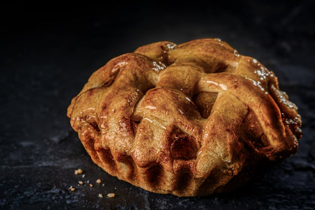

Home
Old-Fashioned Deep-Dish Apple Pie

Description
Nothing says classic American dessert quite like a traditional, homemade
apple pie. This recipe features a mountain of tender, spiced apples baked
inside a spectacularly flaky, golden-brown butter crust. A blend of both
tart and sweet apple varieties creates a complex, perfectly balanced
flavor profile that avoids being overly sugary.
The pie finishes with a glossy egg-washed crust dusted with coarse sugar
for an irresistible crunch. Slice it warm and serve it à la mode with a
generous scoop of premium vanilla bean ice cream to let the cold cream
melt into the warm spiced caramel juices.
Ingredients
- 2 pre-made or homemade buttery pie crusts (for top and bottom)
-
3 lbs assorted apples (such as Honeycrisp and Granny Smith), peeled,
cored, and sliced
- 1 tablespoon lemon juice
- 1/2 cup granulated sugar
- 1/4 cup packed light brown sugar
- 1/4 cup all-purpose flour
- 1 teaspoon ground cinnamon
- 1/4 teaspoon ground nutmeg
- 1/4 teaspoon salt
- 2 tablespoons unsalted butter, cut into small cubes
- 1 large egg beaten with 1 tablespoon water (for egg wash)
- 1 tablespoon coarse sugar for sprinkling
Steps
-
Preheat your oven to 425°F (220°C). Roll out one pie crust disk and fit
it into a 9-inch deep-dish pie plate. Chill in the refrigerator while
preparing the filling.
-
In a large bowl, toss the sliced apples with the lemon juice. In a
separate smaller bowl, whisk together the granulated sugar, brown sugar,
flour, cinnamon, nutmeg, and salt. Pour the sugar mixture over the
apples and toss until all slices are evenly coated.
-
Transfer the seasoned apple slices into the chilled pie crust, mounding
them slightly higher in the center. Dot the top of the apple pile with
the small cubes of butter.
-
Roll out the second pie crust and carefully place it over the apples.
Trim the excess dough overhang, fold the edges together, and crimp or
flute them to seal. Cut 4 to 5 vents in the top crust to allow steam to
escape.
-
Lightly brush the entire top crust with the egg wash mixture and
sprinkle evenly with the coarse sugar.
-
Bake at 425°F for 20 minutes, then reduce the oven temperature to 375°F
(190°C) and bake for an additional 40 to 45 minutes. The crust should be
deep golden-brown and the apple juices bubbling through the vents. Allow
the pie to cool for at least 2 hours before slicing so the filling sets
beautifully.